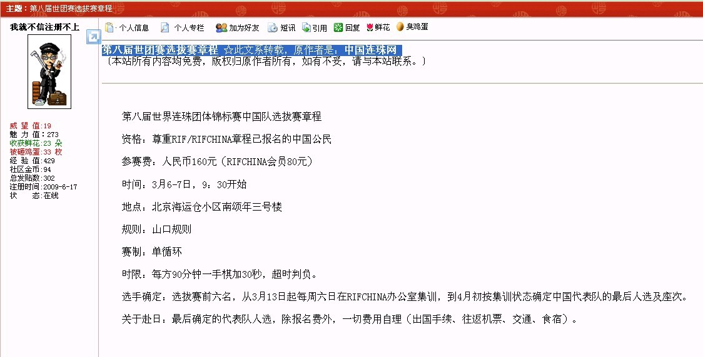

第八届世界连珠团体锦标赛中国队选拔赛章程
资格：尊重RIF/RIFCHINA章程已报名的中国公民
参赛费：人民币160元（RIFCHINA会员80元）
时间：3月6-7日，9：30开始
地点：北京海运仓小区南颂年三号楼
规则：山口规则
赛制：单循环
时限：每方90分钟一手棋加30秒，超时判负。
选手确定：选拔赛前六名，从3月13日起每周六日在RIFCHINA办公室集训，到4月初按集训状态确定中国代表队的最后人选及座次。
关于赴日：最后确定的代表队人选，除报名费外，一切费用自理（出国手续、往返机票、交通、食宿）。
按字面理解 单循环90分钟加秒 2天比完的话 报名人数MS不多啊
支持选拔 希望参加选拔赛的棋手能真正代表中国水平 希望选拔过程公平公正公开
另外，选拔赛前六名，从3月13日起每周六日在RIFCHINA办公室集训――如果参加的选手非北京常住。。。
到4月初按集训状态确定中国代表队的最后人选及座次。――“按集训状态”不知道是主观评价还是客观标准？
不管如何，祝参赛棋手都取得理想成绩，祝中国世团赛打出理想成绩~
RC开放选拔，不管是不是形式，总是一个进步
楼主这个章程出自何处？？？望标明一下
引用：
原文由 测试规则 发表于 2010-2-24 12:08:07 :楼主这个章程出自何处？？？望标明一下
彻底晕倒，您眼睛长臀部上去了？
